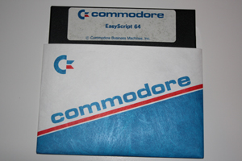
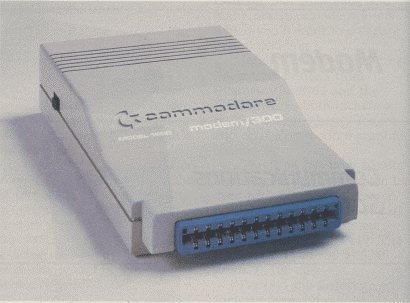
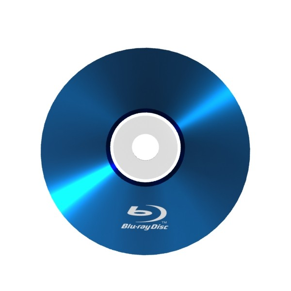

Back in the 1980s, a popular type of computer was the Commodore 64 or C64. They were 8-bit computers and had 64 kilobytes of RAM (Random Access Memory), thus the 64. These computers would also use external floppy disks for storing data or programs. Double-sided Commodore 64 floppy disks could hold 360 kilobytes.
Image source: RarityGuide.com
Similar to what our computers use now, the Commodores could connect to the internet using Commodore modems. The modem below is a Commodore 64 1660 modem. This is a 300-baud modem meaning its download speed is about 300 bits per second.
Image source: www.devili.iki.fi
In June 2006, the Blu-ray Disc was offficaly released. Dual-layer Blu-ray discs hold roughly 50 gigabytes of data. This is a huge amount of data compared to the Commodore technology.
Image source: Barrett Media
So, here is a question: Using the old Commodore technology mentioned above, how long would it take to download a Blu-ray's worth of data, and how many floppy disks would be needed to store that data? Sounds fun, let's take a look.
Let's start with the capacity question. Blu-rays hold 50 gigabytes which is 50 billion bytes. The Commodore floppy disks can hold 360 kilobytes, which is 360 thousand bytes.
So, we divide 50 billion bytes by 360 thousand bytes:
50,000,000,000 bytes / 360,000 bytes = 138888.888...
We get a repeating number. Round that up to an integer and the number of floppies needed is:
1 Blu-ray roughly equals 138,889 Commodore 64 floppy disks. That's a lot of disks.
Now let's work the time problem. Blu-rays hold 50 billion bytes and the 1660 modem downloads at 300 bits per second. With a byte equal to 8 bits, 50 billion bytes to bits is:
50,000,000,000 bytes * 8 bits per byte = 400,000,000,000 bits
400 billion bits. Divide 400 billion bits by 300 bits per second to find seconds...
400,000,000,000 bits / 300 bits per sec = 1,333,333,333 seconds
Convert that number to hours, minutes, and seconds:
1,333,333,333 sec / 3600 sec per hour = 370370 r1333 hours
1333 sec / 60 sec per min = 22 minutes 13 seconds
Divide the hours by 24 to find how many days:
370370 hours / 24 hours per day = 15432 days 2 hours
Divide days by 365 to find years:
15432 days / 365 days per year = 42 years 102 days
So, the final answer is:
That is a really long time. Almost half a century.
Sources: Wikipedia Commodore 64 Peripherals, Wikipedia Floppy Disk, and Wikipedia Blu-ray Disc